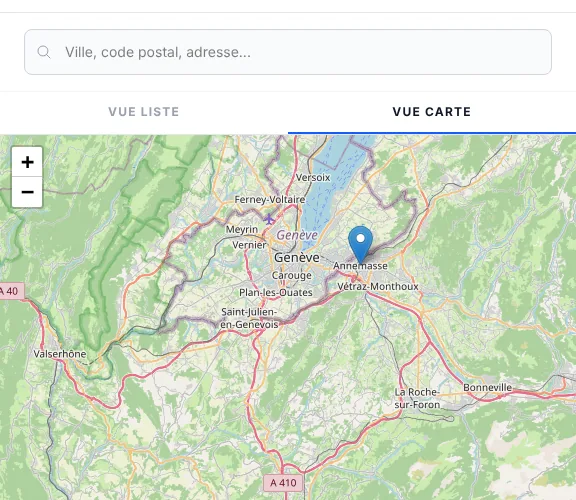
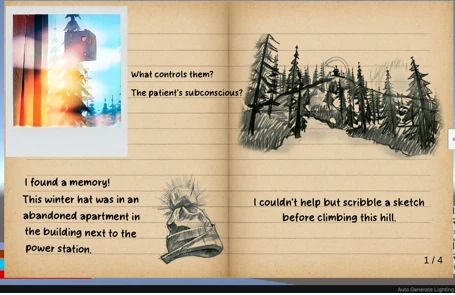
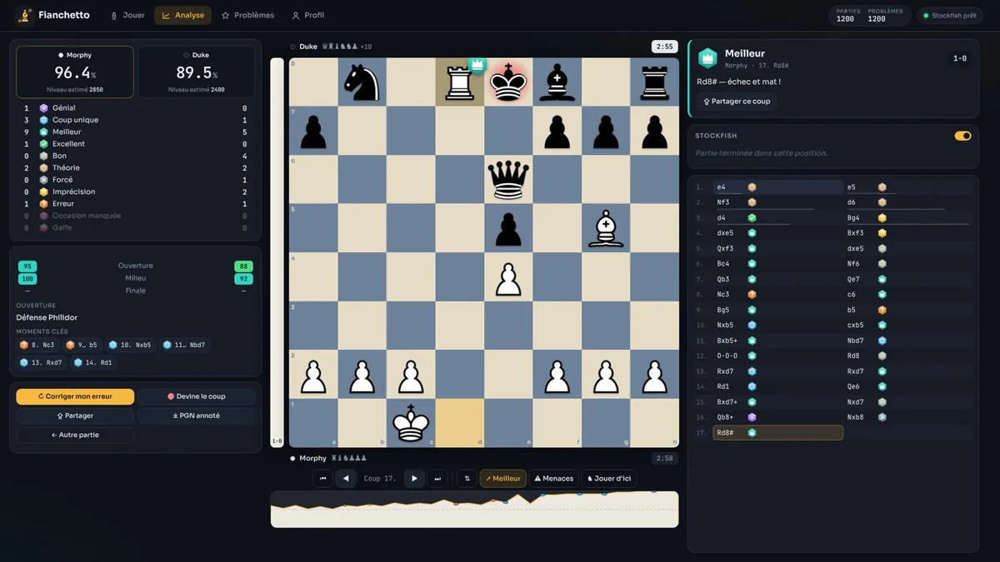

CUBE Bikes — e-commerce full-stack
En équipe de 5 : API ASP.NET Core (JWT, 2FA, paiement Stripe) et interface Vue 3. Mon rôle : le sélecteur de magasin sur carte et la disponibilité par magasin, de l’API jusqu’à l’écran.
Étudiant en 3e année de BUT Informatique (parcours Réalisation d'Applications) à l'IUT d'Annecy, je développe des applications full-stack en C#/.NET, Vue 3 et Python, avec une première expérience en studio de jeux vidéo.
Un projet d’équipe, un stage en studio et un projet personnel, avec à chaque fois ce que j’ai fait moi-même.

En équipe de 5 : API ASP.NET Core (JWT, 2FA, paiement Stripe) et interface Vue 3. Mon rôle : le sélecteur de magasin sur carte et la disponibilité par magasin, de l’API jusqu’à l’écran.

Chez Lappi Soft, j’ai conçu seul le Discovery Diary du jeu : 12 scripts C#, notifications synchronisées au son, 5 langues, et une scène de test passée de 2 à 84 FPS.

Application 100 % navigateur : bots de 500 à 2500 Elo, import Chess.com et Lichess, analyse Stockfish en WebAssembly et exercices tirés de ses propres erreurs.
Originaire de Quimper, j’ai commencé par une prépa intégrée à l’ENIB avant de rejoindre l’IUT d’Annecy, où je termine mon BUT Informatique. Ce qui me plaît : les problèmes qui demandent de la rigueur (je suis majorant en maths de ma promo et j’ai un faible pour les graphes et Python) et les applications que des gens utilisent vraiment, d’une boutique en ligne à un jeu vidéo.
En dehors du code, je fais de la production musicale et de l’équitation : j’ai été champion de France de polo et 3e en saut d’obstacles.
Informatique à l'IUT Annecy
Projets présentés, dont 3 jouables en ligne
Moyenne du dernier semestre
Langues parlées